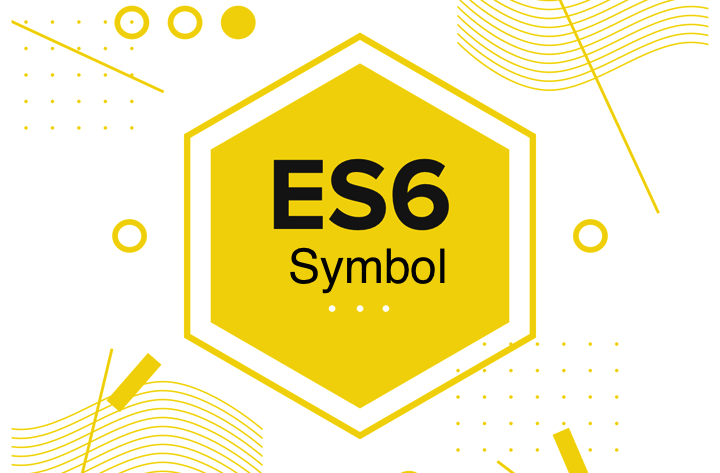

목차
들어가기에 앞서
Symbol은 새로 생긴 7번 째 자료형이며 원시값(Primitive Value)이다.
Symbol에 들어가기 전에 몸풀기로 ES5의 자료형부터 알아보고 가자.
ES5에는 6가지 자료형이 있다.
- Boolean
- Number
- String
- Null
- Undefined
- Object
원시값(Primitive Value)
Object를 제외한 값들은 원시값이다.
값이 유한하며, 그리고 값으로서 비교한다.
(고 생각했지만 심볼을 보면 틀린 말 같다.
심볼을 생각하면 원시값은 프로퍼티를 추가할 수 있느냐 없느냐와 불변값이냐로 나뉘는 것 같다.)
다음 값은 모두 참이다.
하지만 다음과 같은 예외(버그)가 존재한다.
typeof null을 제외하고 나머지 문제는 아래와 같이 해결할 수 있다.
isNaN은 NaN인지 아닌지 구하기 위한 함수이며, ES6 들어서 Number.isNaN()과 Object.is() 메소드가 생겼다.
isNaN과 Number.isNaN의 차이는 후자는 타입 검사(number인지 아닌지)까지 한다는 것이다.
아래 링크를 통해 예제로 확인해보자.
Number.prototype.isNaN()
하지만 typeof null을 개선하면 레거시 코드들이 문제가 있는지 아직도 고쳐지지 않았다.
아래 링크를 참조해서 누가 번역을 해주면 고마울 것 같다.
The history of “typeof null”
또한 원시값은 불변값(Immutable Value)이다.
아래의 결과가 당연하다고 생각하는 사람은 객체에서는 어떻게 결과가 나타나는지 객체 파트를 보길 바란다.
객체(Object)
객체는 Boolean, Number, String, Null, Undefined를 제외한 자료형이다.
어… Function은 타입이 function인데 Array나 RegExp, Date는 왜 object인지 아는 사람이 있으면 알려주길 바란다.
일단 저 위에 있는 놈들은 객체이기 때문에 프로퍼티를 할당할 수 있다.
콘솔 창에서 각각 a란 프로퍼티가 붙었는지 보자.
또한 객체는 참조 타입인 것 같다.
가지고 있는 값으로서 비교하는 게 아니라 저장된 메모리 주소를 참조하여 같은지 비교하는 것 같다.
또한 갯수도 무한하다.
다음은 모두 거짓을 반환한다.
또한 객체는 참조 타입이기 때문에 불변값이 아니다.
이런 객체 타입을 불변값으로 만드는 예제는 아래 링크를 참조하자.
직접 구현해본 JS 객체, 배열의 깊은 복사하는 방법
Symbol의 특성
여기서는 심볼에 대해 간략하게만 설명하겠다.
백날 이론을 봐봤자 왜 써야하며 언제 써야하는지를 모르면 무의미하다고 여기기 때문이다.
따라서 간단하게만 특성을 보고 탄생 배경과 사용 사례를 본 이후에 본격적인 설명을 하겠다.
Symbol은 새로 생긴 7번 째 자료형이며 원시값(Primitive Value)이다.
기존 원시값들은 위에서 보는 바와 같이 값으로서 비교를 했다.
하지만 심볼은 원시값임에도 불구하고 객체와 같이 참조하는 메모리의 주소를 가지고 비교하는 것 같다.
심볼은 생성할 때마다 독자적인 메모리 공간을 가져서 고유함을 유지한다.
그럼에도 불구하고 원시값이란다.
내가 아는 원시값은 값으로서 비교하는 것 같았는데 그럼 얘는 왜 원시값이라 부르는 걸까?
그건 아마도 심볼이 불변값이며 프로퍼티를 추가(객체의 특성)할 수 없기 때문이 아닐까 싶다.
Symbol의 탄생 배경
이라고 하긴 뭐하고 어떤 문제점 때문에 심볼이란 놈이 생긴 건지 간단하게 다루어보았다.
아래와 같은 코드를 보자.
이 라이브러리는 전 세계의 수백만 개발자들이 쓰게 되었고, 많은 사람들이 아래와 같이 코드를 짜기 시작했다.
하지만 ES6 들어서 위에 우리가 사용한 Array.isArray 메소드가 표준 메소드로 지정되었다!
그리고 그 메소드는 우리가 예측한 문자열들이 아닌 Boolean 값을 반환하는 메소드다!
따라서 우리 라이브러리를 사용해서 개발한 사용자들의 코드가 의도한 대로 작동하지 않을 가능성이 있다!
하지만 다행히도 위 메소드는 덮어쓰기가 가능하다.
그래도 우리 라이브러리를 쓰는 개발자가 ES6의 표준 메소드 작동 방식으로 Array.isArray를 썼다간 낭패를 볼 것이다.
하지만 모든 프로퍼티가 덮어쓰기가 가능한 게 아니다.
아래와 같이 상수(네이밍이 UPPER_SNAKE_CASE로 돼있다.) 프로퍼티도 존재하기 때문이다.
|
|
Symbol의 사용 사례
- 표준 객체의 프로퍼티로 사용
위에서 봤 듯이 표준 객체에 혹시 내가 쓴 프로퍼티가 표준 프로퍼티가 되는 불상사(?)가 생긴다면 코드가 의도치 않게 작동할 것이다.
물론 매우 드문 일일 것이지만, 코드를 방어적으로 쓰는 습관은 항상 들여야하는 것 같다.
위의 Array.isArray를 우리는 심볼을 사용해서 문제를 회피할 것이다.12345678910const isArray = Symbol('isArray');Array[isArray] = arg => ((Object.prototype.toString.call(arg) === '[object Array]') ? 'Array' : 'Not Array');// Array.isArray를 지원하는 모던 브라우저(크롬, 파폭의 최신 버전 등등)에서 아래 코드를 확인해보자.console.dir(Array);// 사용은 아래와 같이 하면 된다.const arr = {};if(Array[isArray](arr) === 'Array') console.log('나는 배열이당!');else console.log('나는 배열이 아니당!');
이런 식으로 심볼을 사용하게 되면 표준 메소드 때문에 벌벌 떨며 염려할 필요가 사라진다.
하지만 위 사례에서도 하나 문제점이 존재한다.
바로 전역 공간에 심볼을 노출해야한다는 점이다.
우리의 라이브러리가 점점 규모가 커져서 아래와 같이 다양한 타입을 검출한다고 가정해보자.
|
|
이렇게 전역 공간에 심볼을 일일이 노출시키는 게 마음이 들지 않으므로 네임 스페이스 패턴을 사용해서 모듈을 구현할 수 있다.
전역에는 단 하나의 변수인 $SYMBOL만 노출되므로 좀 더 안전하게 코드를 작성할 수 있다.
좀 더 우아하게 코드를 작성하고 싶은 사람은 ES6의 import/export(를 브라우저에서 미지원하므로 모듈 번들러인 Webpack 등등까지 사용)를 해보자.
- 표준 심볼(Well-known Symbol)로써 사용
ES6가 등장하기 전에 사람들의 필요에 의해 생성하거나 개발한 함수들이 많을 것이다.
그 중에 공통된 함수들은 기능과 네이밍이 비슷한 경우가 많을 것이다. (내부 로직은 다를지라도)
이렇게 많은 사람들이 쓴 함수의 이름 등등을 표준 프로퍼티로 만들고 나면?
내부 로직이 다 같지는 않으므로 그 수많은 코드가 깨질 수 있다. (우리 Array.isArray와 마찬가지로 말이다.)
따라서 기존 개발자들이 개발한 코드들의 안전성을 보장하고자 표준 프로퍼티를 심볼로 만든 경우가 있다.
그 목록은 아래와 같다.- Symbol.iterator(추후 다룰 예정)
- Symbol.unscopables
- Symbol.match
- Symbol.species
- Symbol.toPrimitive
- 등등…
Symbol 파헤치기
이제 왜 쓰는지를 알았으니 본격적으로 심볼에 대해 파헤쳐보자.
심볼은 생성할 때마다 독자적인 영역을 가지지만 공유도 가능하다.
|
|
또한 심볼의 타입은 symbol이며 new 연산자를 써서 생성하면 오류가 뜬다.
(당연한 소리처럼 들리겠지만 ES5의 function의 경우를 생각하면 이런 오류 하나하나가 참 감사하다.)
그럼 저 Symbol 안에 들어가는 문자열은 무엇에 쓰이는 물건인고?하면… 디버깅 용으로 쓰인다고 한다.
개인적으로는 변수명만으로도 어떤 심볼인지 유추가 가능할 것 같은데 심볼의 문자열을 가지고 디버깅을 어떻게 하는지 모르겠지만…
심볼의 문자열을 가지고 노는 방법은 아래와 같다.
프로퍼티의 은닉화?
심볼은 객체의 프로퍼티(메소드)에 쓸 때 우리는 그 값을 참조할 수 있을까?
있다! 따라서 은닉화를 위해서 Symbol을 쓰는 건 올바른 방법이 아니다.
이 이상 심볼에 대해 더 딥하게 다루기에는 실용성이 떨어질 것 같고 그 때 그 때 찾아보면 될 것 같다.
사실 이터레이터 때문에 공부를 했지 실무에서 많이 쓸지는 잘 모르겠다.
이 글을 읽고 난 독자는 다음 글을 읽기 바란다.
(ES6) Iterator